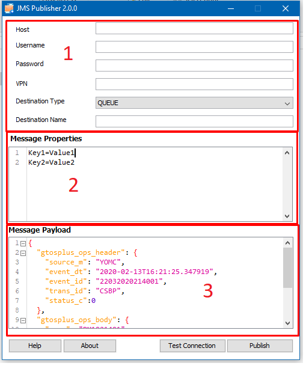

Version 2.0.0
JMS Publisher doesn't require any installation. Download latest version from download links. JMS Publisher requires JRE 8+ present on the execution path.
Windows users can download executable file and run that file directly.
Download jar file and run that jar file using below command.
java -jar JMSPublisher.jar
In Connection details enter your JMS credentials like HOST, USERNAME,PASSWORD and VPN. To verify connection click on Test Connection button.
In Message Properies section you can provide JMS Properties to be attached to publishing message. This field is optional, leave this field empty if you don't want to include JMS properties in your message.
NoteEach property should be in new line and key values separated by "=".
Key1=Value1
Key2=Value2Messagage payload can be any string that is published as a part of JMS Message Body.
{
"gtosplus_ops_header": {
"source_m": "YOMC",
"event_dt": "2020-02-13T16:21:25.347919",
"event_id": "22032020214001",
"trans_id": "CSBP",
"status_c":0
},
"gtosplus_ops_body": {
"pm_m": "PM1021401",
"csb_location_c": "loc1",
"filler": ""
}
}